###Reciprocity
cug.test(g, grecip, mode="digraph", cmode="size", reps=1000)
####Controlling the number of edges & size
cug.test(g, grecip, mode="digraph", cmode="edges", reps=1000)
####Controlling the dyad census
cug.test(g, grecip, mode="digraph", cmode="dyad.census", reps=1000)
###Transitivity
cug.test(g, gtrans, mode="digraph", cmode="edges", reps=1000) 社会网络方法论: 分析网络
Political Research with Big Data (80700673)
胡悦
清华大学
概要
理解网络
- 网络方法论 ✓
- 网络要素 ✓
- 自我中心网络 ✓
分析网络
- 邻居分析
- 扩散分析
- 全网分析
邻居分析
邻居类型
- Dyads
- Triads
- Communities
Dyads种类
- None: A B
- Arc: A → B; B ← C
- Reciprocal(互惠): A ↔︎ B
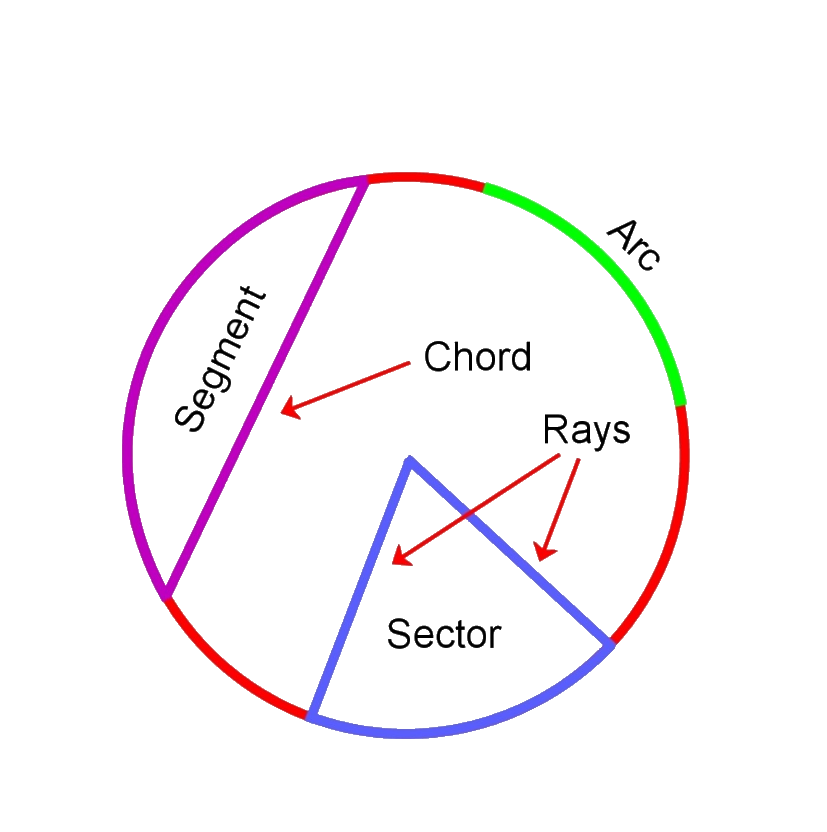
- Dyadic: \[R = \frac{\#Reciprocated\ Pairs}{\# Connected\ Pairs}\]
- Arc: \[R = \frac{\#Reciprocated\ Arcs}{\# Total\ Arcs}\]
Simmelian tie
Dyads in a triad:
- Simmelian tie: Dyads 同时与第三方有互惠关系
- Dyads more stable when embedded in triads
Triadic Analysis
A、B、C三方，存在几种建立关系的方式?
(22)3 = 64
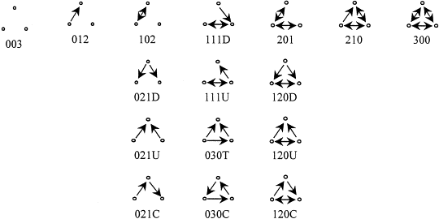
Triads 分型
A→B→C + A→C
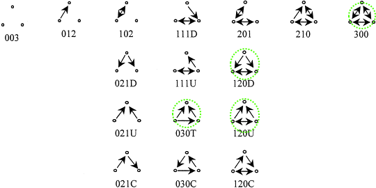
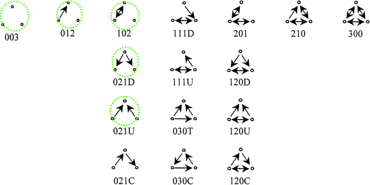
应用
定义网络结构平衡（Structural Balance）

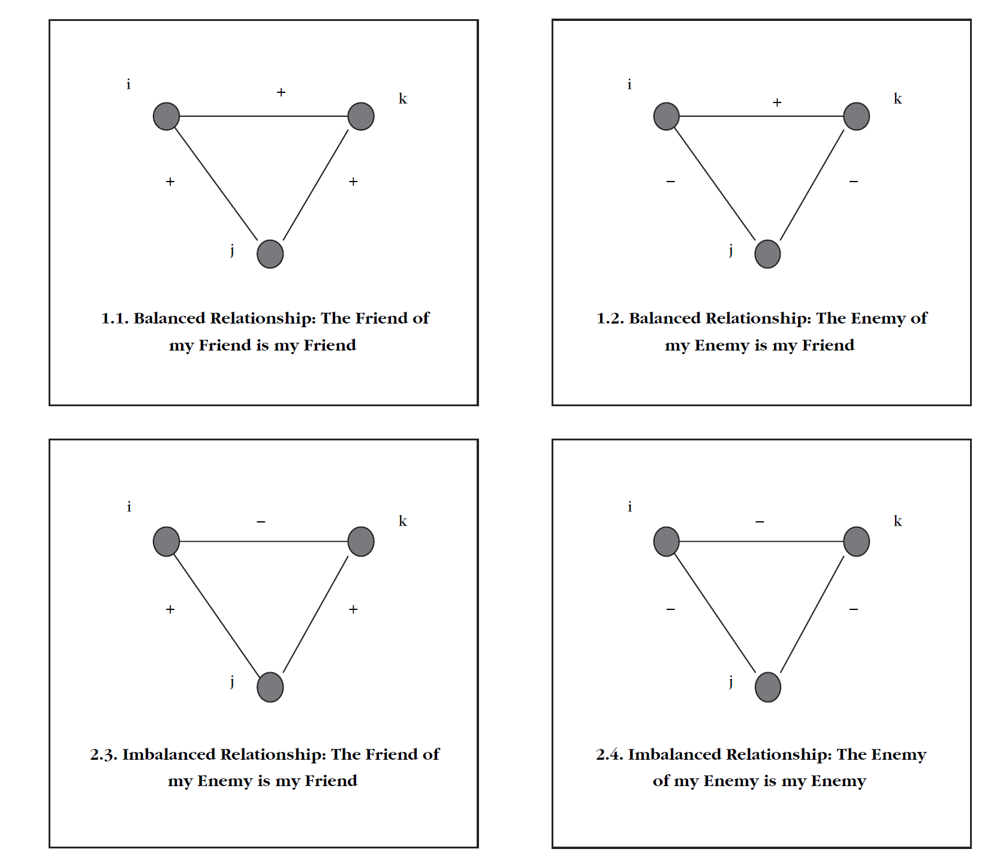
Beyond k-ads
社群（Community）: e.g, 小世界
- 695 人
- 平均距离为大约5步
- 平均每人3步内就能覆盖75个其他人
定义社群
Bottom Up:
Cliques → n-cliques → n-clans
Top Down:
k-cores → factions → modularity
K-Core
The k-core of a network graph G is the maximal subgraph H ⊆ G, such that
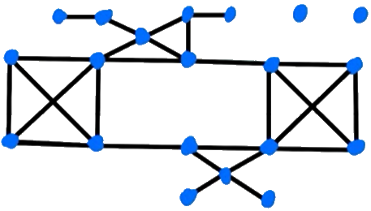
Faction
理想状态：
邻国相望，鸡犬之声相闻，民至老死，不相往来 ——《老子·第八十》

- 实现：Arranging actors to resemble the ideal as closely as possible.
- 步骤：
- Partition
- Evaluation
- Moving
- Evaluation, again
- Repeat
辨别社群
- Faction method?
- Heuristic method, 但难以进行并行运算
- Hierarchical Clustering
Agglomerative method
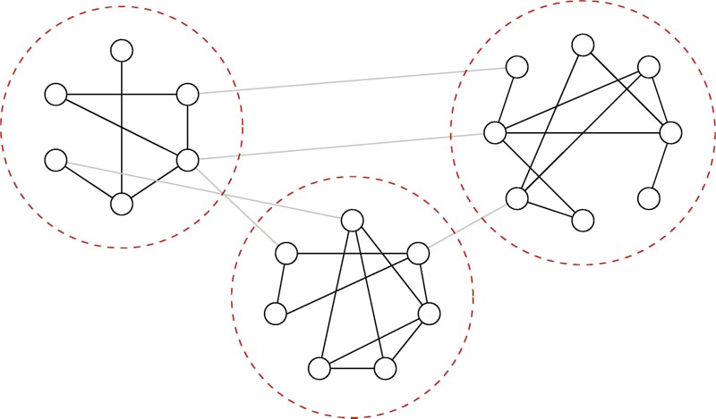
- 可能丢失弱连结vertices
Divisive method (top down)
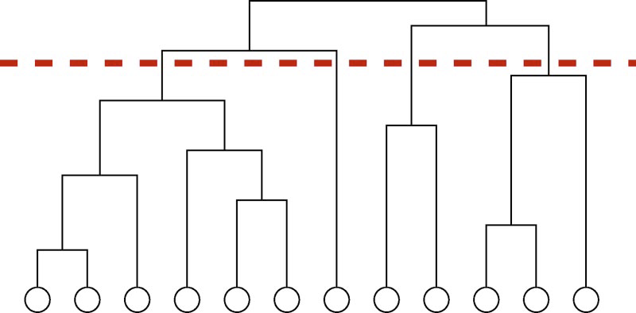
Agglomerative vs. Divisive

社群特征：内聚性
A.k.a., 凝聚力，邦翰两个层面
连结性
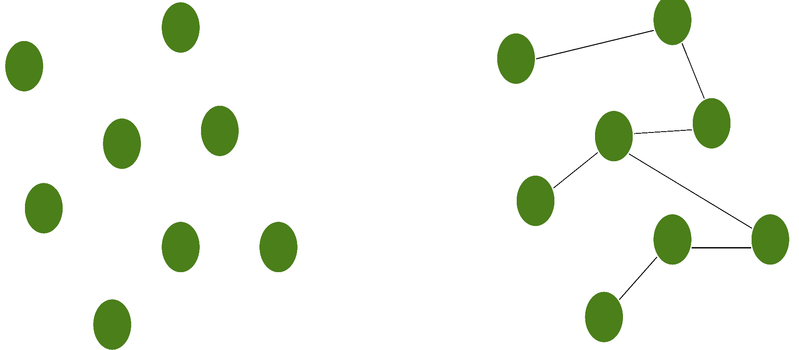
可达性
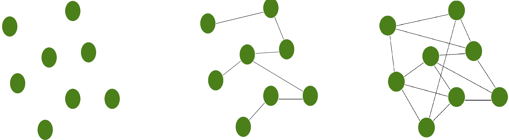
最小内聚性
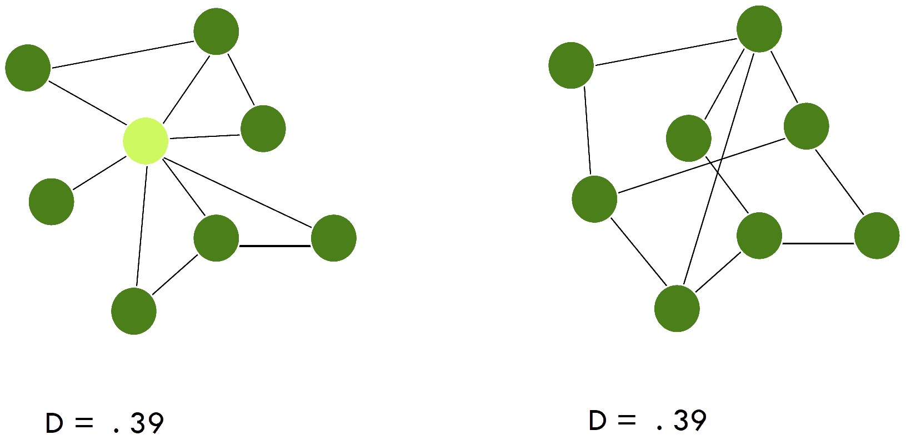
高
- 集权
- 信息集中
- 不平等
- 个体行为影响大
- 碎片化结构
低
- 分权
- 信息透明
- 平等
- 个体行为难以撼动结构
- 均衡结构
Modularity: 社群到社会
Modularity: 比起.red[辨别]出社群，更关注一个社会是否由若干个社群.red[组成]。
.center[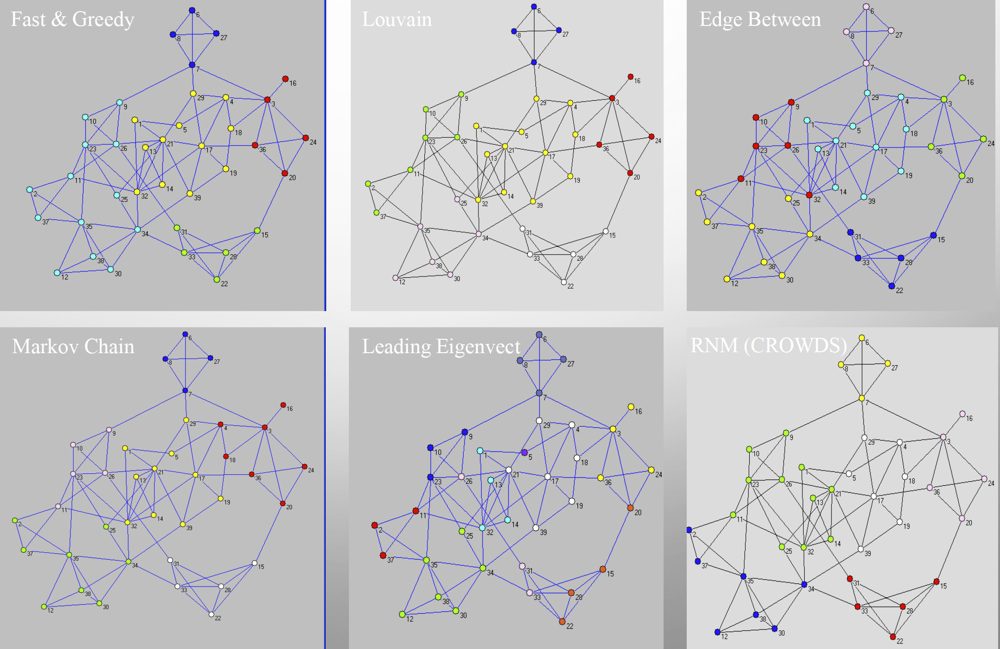]
Modularity应用：语言与身份认同
Tamburrini et al 2015
.center[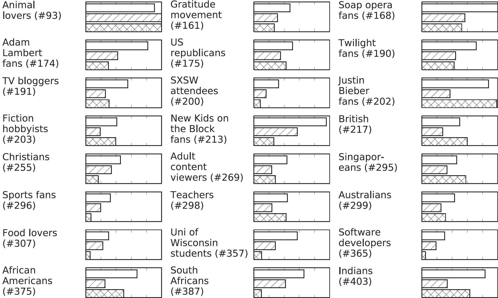]
???
Tamburrini, Nadine, Marco Cinnirella, Vincent A. A. Jansen, and John Bryden. 2015. “Twitter Users Change Word Usage According to Conversation-Partner Social Identity.” Social Networks 40: 84–89.
modula-rity maximisation algorithm
word-usage frequencies (solid bars at the top of eachplot),
word-ending frequencies (slashed bars in the middle)
apostrophe usage (crossed bars at the bottom).
- 人们根据自己的community改变语言特征
- communities越独立，语言特征越明显
class: inverse, bottom
扩散分析
分析方向
.center[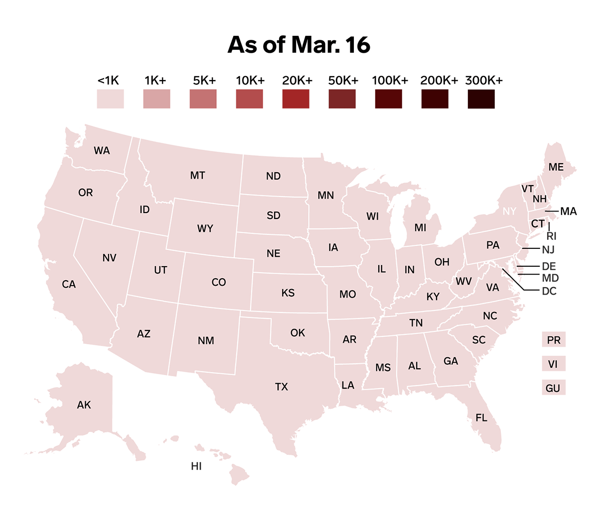]
- （法律、政策、习惯.etc）采用的时间
- 谁是“始作俑者” vis-a-vis “第一个吃螃蟹的人”
- 扩散过程是谁影响了谁
网络视角
- 联系网络（Contact network）
- 暴露网络（Exposure network）
- 传动网络（Transmission network）
联系网络
“Patient 0”效应: 谁接触了Patient 0，最终感染了谁
.center[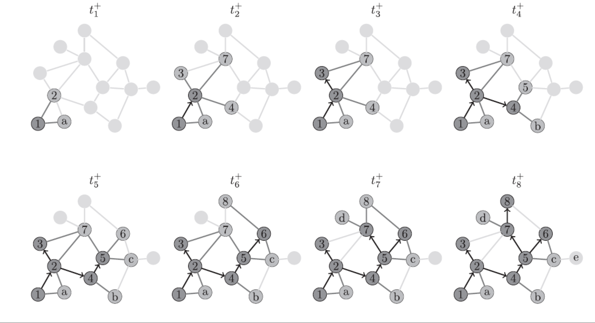]
???
Wu, J., Crawford, F. W., Kim, D. A., Stafford, D., & Christakis, N. A. (2018). Exposure, Hazard, and Survival Analysis of Diffusion on Social Networks. Statistics in Medicine, 37(17), 2561–2585. https://doi.org/10.1002/sim.7658
暴露网络
谁是易感人群
.center[]
???
联系网络的子集
传动网络
传播（传递）路径究竟是怎样的
.center[]
扩散应用
.pull-left[ Valente 1996]
???
exposure：按时间adopt
Valente, Thomas W. 1996. “Social Network Thresholds in the Diffusion of Innovations.” Social Networks 18(1): 69–89.
Threshold: Early adopter, early majority, late majority, laggards.
个体网络与全网角度理解threshold
–
.pull-right[ “始作俑者”?]
谁影响谁？
.pull-left[ ### 机制]
.pull-right[ ### 表现]
应用
Desmarais, Harden, Boehmke (2015)
.pull-left[ 捕捉传播路径：]
???
Desmarais, Bruce A., Jeffrey J. Harden, and Frederick J. Boehmke. 2015. “Persistent Policy Pathways: Inferring Diffusion Networks in the American States.” American Political Science Review 109(2): 392–406.
–
.pull-right[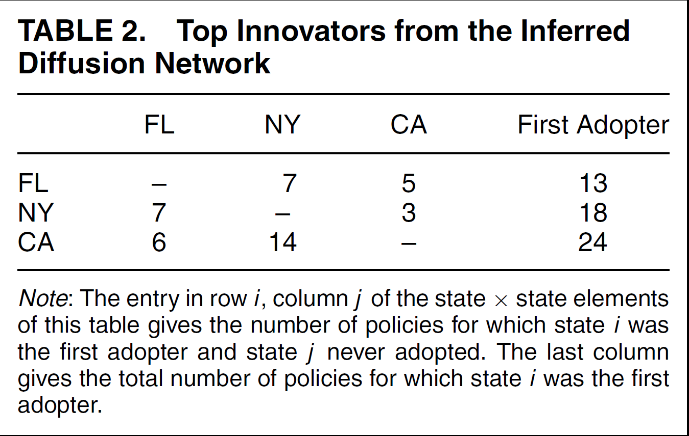]
???
佛罗里达是近五年policy的主要推动者
一个州被认为innovative，并不单纯取决于它多快采用一个policy
机制判断
影响还是仅仅是相似？（Aral et al 2009）
???
influence vs. homophily
–
传统方法会高估影响机制 300-700%
–
Matched sample estimation
???
Aral, Sinan, Lev Muchnik, and Arun Sundararajan. 2009. “Distinguishing Influence-Based Contagion from Homophily-Driven Diffusion in Dynamic Networks.” Proceedings of the National Academy of Sciences 106(51): 21544–49.
在用Yahoo！Go（类似于企业微信）使用者数据
根据节点的网络性质：在控制了nodes的各种行为和个体特点后，比较那些有很多adopted friends 和没有那么多adopted friends之人
–
e.g. “云集响应”还是”人以群分” （Lazer et al. 2010）
- 164公共政策2年级硕士生
- 同cohort
- 刚入学(T1)，第二学期开始(T2)，第二学期结束(T3)
???
Influencing vs. affiliating
Lazer, David et al. 2010. “The Coevolution of Networks and Political Attitudes.” Political Communication 27(3): 248–74.
个体根据其associates改变正政治看法，这种conformity受social ties 而非task ties影响。而政治看法反过来对relationship影响不大。
Modeling Peer Influence
.center[Y(1) = XB] .center[Y(T) = αWY(T) + (1 - α)Y(1)]
Y(1): N个人，每人对M个问题的.red[初始]看法 (N × M);
X: K个会影响个体看法的（.red[外生性]）变量（N × K;）
α: （内生性的）人际影响对Y的作用的.red[比重] ;
W: .red[人际关系矩阵]（N × N).
class: inverse, bottom
全网分析
(复习)方法论的跃迁
.pull-left[]
–
.pull-right[]
随机网络构建与测试
- Conditional Uniform Graph (CUG)
- Quadratic Assignment Procedure (QAP)
Conditional Uniform Graph
“Baseline network”比较的一种
.pull-left[]
.pull-right[]
???
根据特定属性通过bernoulli分布建立随机网络，所有网络都是被视为同等可能出现
Generating 1000 random graphs of size 20; assumes digraph. tprob, probility of any tie existing is 30%. Plotting the density. it is probability, so, some is before 0.3, some beyone 0.3
Network Hypotheses (H0)
.center[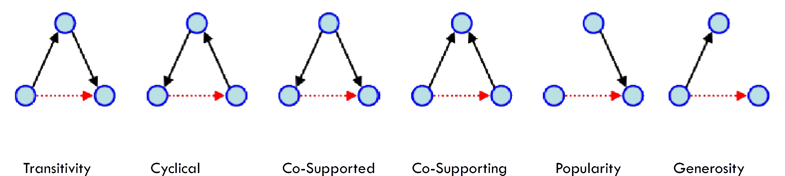]
???
检验观测网络与随机网络在这些方面是否相异
Conditional Uniform Graph Test
.pull-left[]
???
Drabek et al. (1981) provide seven case studies of emergent multi-organizational networks (EMONs) in the context of search and rescue (SAR) activities. Networks of interaction frequency are reported, along with several organizational attributes.
–
.pull-right[]
Quadratic Assignment Procedure
.pull-left[ 1. 创建随机网络分布 (= CUG) 1. 控制网络结构 (≠ CUG)]
???
网络结构: centrality 等
non-parametric，从sample中抽出两组，对比stats，看是否一样。 与t-test等的对比重要不同在于不是跟normal比
–
.pull-right[ 网络Permutation Test] .footnote[1 Pearson’s r correlation or Euclidean distance]
???
网络correlation 根据两点除相互连接外的其他degree (remaining degree)计算
多元“回归”分析
DV: 网络
IV: 解释变量adjacency matrices
.center[E[Yij] = β0 + β1X1ij + β2X2ij + … + βkXkij]
QAP can help
Network Logit Model
Coefficients:
Estimate Exp(b) Pr(<=b) Pr(>=b) Pr(>=|b|)
(intercept) -0.4251826 0.6536504 0.3 0.7 0.3
x1 0.5794452 1.7850479 1.0 0.0 0.1
x2 3.0589826 21.3058690 1.0 0.0 0.0
Goodness of Fit Statistics:
Null deviance: 582.2436 on 420 degrees of freedom
Residual deviance: 548.1452 on 417 degrees of freedom
Chi-Squared test of fit improvement:
34.09844 on 3 degrees of freedom, p-value 1.888613e-07
AIC: 554.1452 BIC: 566.266
Pseudo-R^2 Measures:
(Dn-Dr)/(Dn-Dr+dfn): 0.07509042
(Dn-Dr)/Dn: 0.05856387
Contingency Table (predicted (rows) x actual (cols)):
Actual
Predicted 0 1
0 188 122
1 42 68
Total Fraction Correct: 0.6095238
Fraction Predicted 1s Correct: 0.6181818
Fraction Predicted 0s Correct: 0.6064516
False Negative Rate: 0.6421053
False Positive Rate: 0.1826087
Test Diagnostics:
Null Hypothesis: qap
Replications: 10
Distribution Summary:
(intercept) x1 x2
Min -4.1846 -2.6131 -1.4193
1stQ -3.6973 -1.6503 -0.4873
Median -3.2993 -1.4386 0.1619
Mean -3.2541 -1.0694 0.3365
3rdQ -2.8198 -0.6054 1.0610
Max -2.1450 0.9575 2.6196???
There are also netlm etc.
Not 10, often over 1000
nullhyp choices: qap quick, qapspp robust
class: middle
.pull-left[ ]
???
ERGM就如同从图画到拉洋片/电影
–
.pull-right[]
???
更关键在，在理解一个的时候考虑到其他层次问题，“全方位视听感受”
但如果对structure不感兴趣，不需要用ERGM
Latent space models 也可以控制structure，但目的在于去除而不是care，而且是基于baysian
ERGM能解决问题举例
.pull-left[ Interdependence]
???
联合抗敌 vs “攘外必先安内”
–
.pull-right[ Dyadic Covariate]
??? partisanship vs. issues
–
.center[ Structural]
ERGM要素与组合
Simple Random Graph Model
\[P(X = x) = \frac{exp(\theta_LL(x))}{k(\theta)}\]
- L: # of arcs
???
1959，只允许specify links
θ 是edge parameter, k(&theta)只是normalize整个结果sum为1
–
.red[Bernoulli Assumption]
- Tie 是独立的（呵呵~）
- IID ties →
- Log-probability of a graph is proportional to a weighted sum of edge-count
???
基于这个assumption才有simple random graph
P1 Model
\[P(X = x) = \frac{exp(\theta_LL(x) + \color{red}{\theta_MM(x) + \sum_i\alpha_iy_{i+} + \sum_j\beta_iy_{+j}})}{\kappa(\theta)}\]
- M: # of mutual
- yi+: # outgoing ties
- y+j: # incoming ties
.red[Dyad Independence Assumption]
- 允许互惠和不同方向的不同作用
- 用于binary,有向网络
???
- Allows for reciprocity and differential attractiveness
- Useful for binary, directed graphs
–
缺陷：结构
???
所有高于degree of reciprocity的性质都不能解决, 没人再用
P* Model
\[P(X = x) = \frac{exp(\sum_i\theta_i\color{red}{z_i(x)})}{\kappa(\theta)}\]
???
zi可以是any network statistics，可以把他们加在一起
–
.red[MARKOV ASSUMPTION]
- Ties are (conditionally) independent unless they .red[share] a node.
- Parallels in Markov chains, time series, spatial analysis
- Think of nodes as .red[connecting] edges to obtain this dependence structure
- Ties are conditionally dependent if and only if they .red[share] a node
???
ERGM基于此发展而来，现在两者区别更多是computational而非想法上的
.pull-left[ 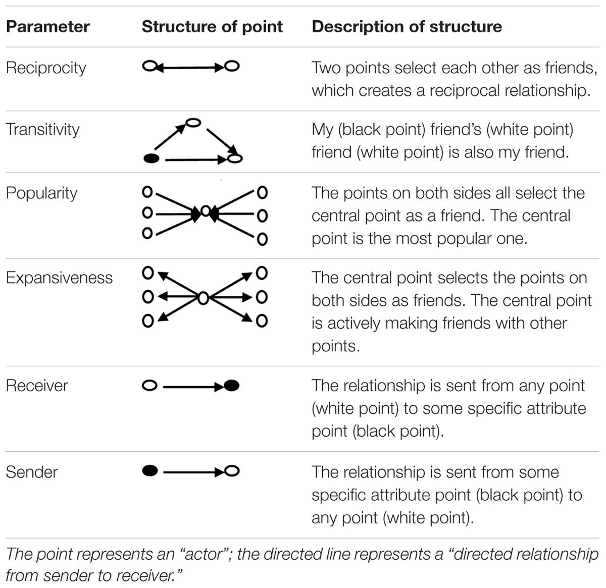]
.pull-right[ 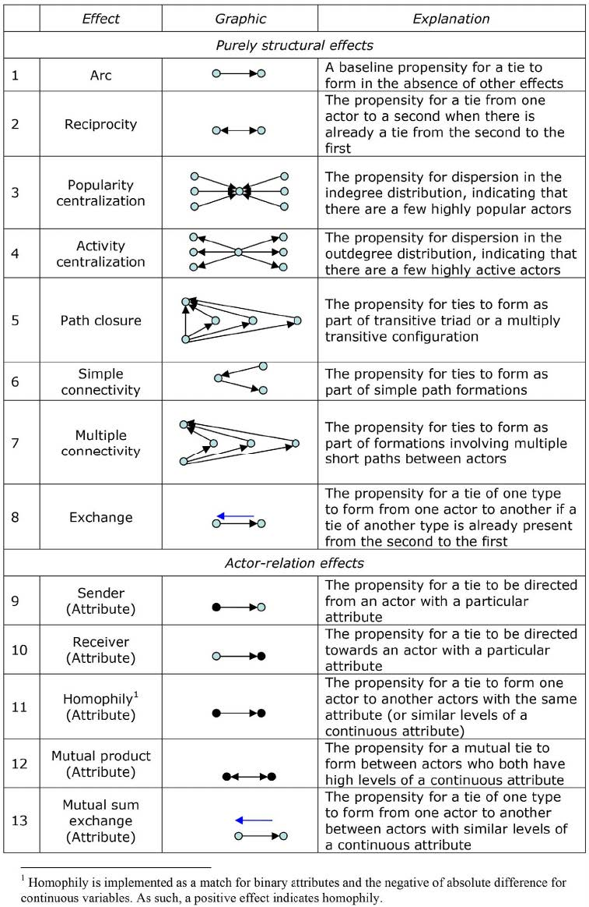]
???
Things one can test in P*, path closure: 多重triangle
算起来更麻烦， necessary
如果你想了解更多
???
GOOGLE上没有全的表
ERGM完全式
\[\begin{align} P(N, \boldsymbol{\theta}) =& \frac{exp(\sum_i\theta_iz_i(N))}{\kappa(\theta)}\\ P(N, \boldsymbol{\theta}) =& \frac{exp(\boldsymbol{\theta'h}(N))}{\sum_{N^*\in N}exp(\boldsymbol{\theta'h}(N^*))} \end{align}\]
.red[ASSUMPTION]
- Model是正确的
- 在设定了network statistics后，观测到任何两个具有同样网络属性的networks的几率是相同的
???
N* 是特定network statistics 的数目 分母随所加statistics而变得复杂
- Model is correctly specified
- Given a set of network statistics, there’s equal probability of observing any two networks with the same values of those statistics.
ERGM结果解释
Network level：.red[exp(θ)]，relative likelihood of observing Ni+ to observing Ni-
???
增加一个network statistics 比不加它变化的likelihood
odd-like stuff: 那么 θ = 0代表什么？
θ = 0 ⇒ exp(θ) = 1 ⇒ 增加或不增加这个stats看到observed network几率是一样的，a.k.a., 没用
–
Edge level：P(Nij = 1|N-ij, θ) = logit-1∑r=1θrδr(ij)(N)
.center[.red[exp(θrδr(ij))]]
???
δr(ij): Change parameter
记录改变多少： 比如同样是增加一个edge，对于mutual（包含reciprocal和not conntected），对于i 和 j已经相连的情况，加一个edge是增加了一个mutual，那么δ + 1, 但如果i 和 j不相连，那么加一个edge，是把一个互不相连的mutual弄没了，δ - 1。 所以实际计算比较复杂，但btergm::interpret
\(logit^{-1} = frac{1}{1 + e^{-1}}\)
–
Nodal level: Block-wise conditional distributions
???
Blocks are split according to an attribute, complicated
.pull-left[ ## ERGM Diagnoses] ???
???
Degenracy is ERGM goodness of fit, unstable results, random process, model fit, little changes a lot; leading to prediction that everyone should connect to everyone or none
Looking for high p-value (not violate the assumptions)
COnvergence is for Markov Chain
–
.pull-right[ ## ERGM的局限]
???
- Maximum pseudo LE； 前两个对P1之前还好，之后算不出来
Theory really matters!! 来解释要加什么network statistics
怎么解决 geometrically weighted degree distribution
- Sensitivity
–
.pull-right[ 进化版]
???
G ERGM: weighted ergm
S TERGM: Network panel data, Separable TERGM for each time point the ties formating and disoluting independently
F ERGM: Frailty ERGM “individual-level random effects” for the propensity for a directed tie
Wrap Up
.pull-left[ Edge Effect (邻居效应)]
.pull-right[ Network Effect (全网分析)]